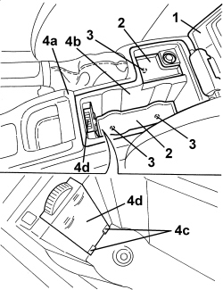

7040L75 GLOVE COMPARTMENT ON REAR TUNNEL TRIM R. R.
- Path
- Procedures > 70 FITTINGS > 7040 BODY INTERIOR FITTINGS AND TRIM > 7040L PASSENGER COMPARTMENT FLOOR COVERING > 7040L75 GLOVE COMPARTMENT ON REAR TUNNEL TRIM R. R.
- Kind
- repair procedure (removal / refitting; the operation number is the code)
- Applies to
- all engines; all production periods
- Interactive page
- https://sloeber94.github.io/elrnDB-aBrrSpdr/en/#/946002653
Applies to: all engines; all production periods
 Removing
Removing
 Refitting
Refitting1. Open the oddments pocket cover on the tunnel.
2. Keep the rubber covers.
3. Undo the bolts underneath the covers.
4. Lift up the cover (4a) slightly and extract the oddments compartment (4b) releasing it from the air duct (4c).

Applies to: all engines; all production periods
Refitting
Removing- Check that the oddments compartment is not damaged.
- Position the oddments compartment and attach it to the air duct, then fit it in place.
- Tighten the bolts.
- Fit the rubber covers in place.
- Close the oddments pocket cover on the tunnel.